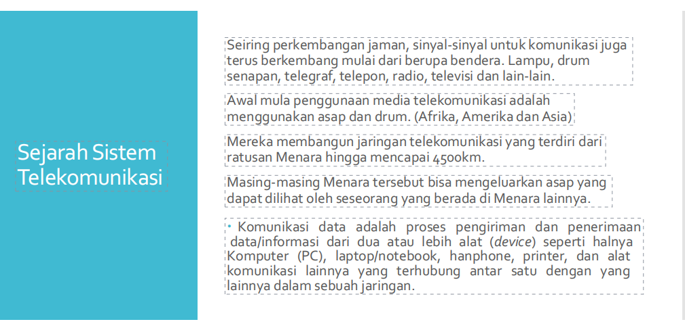
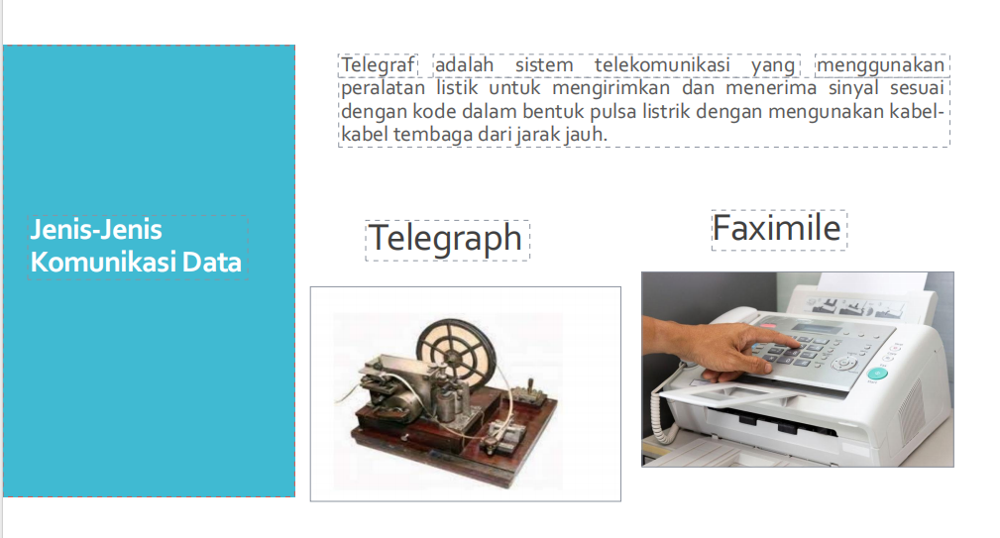
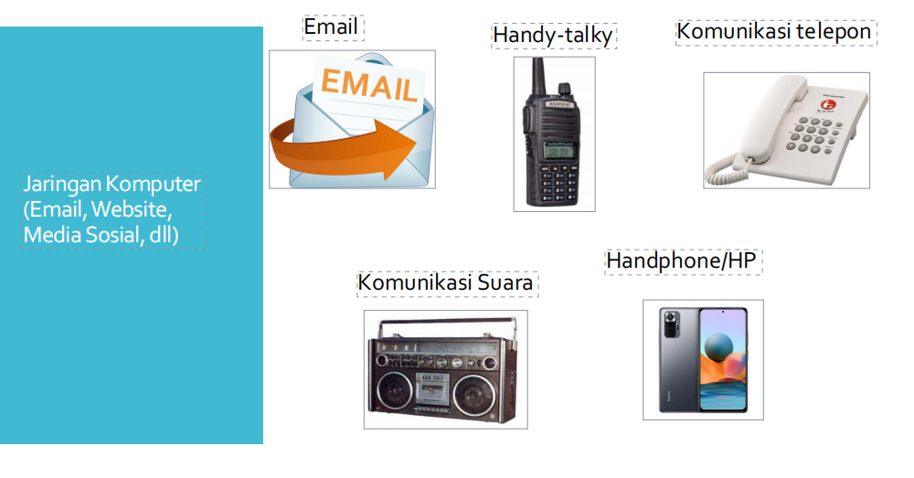
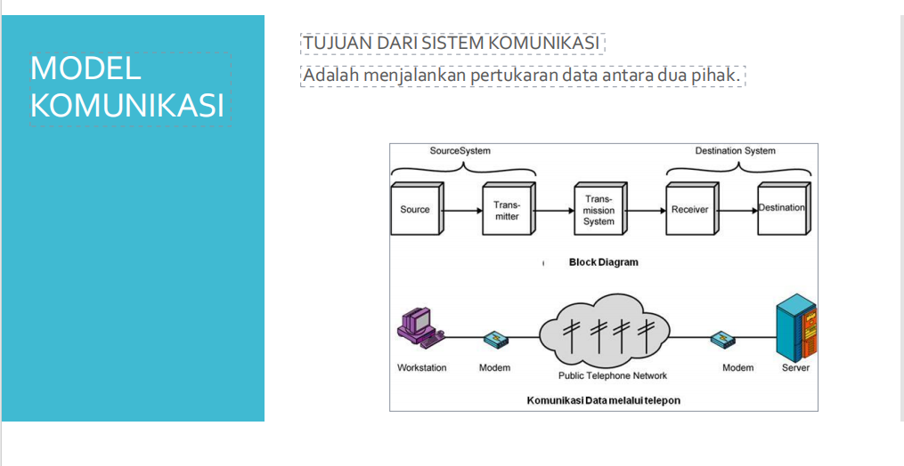
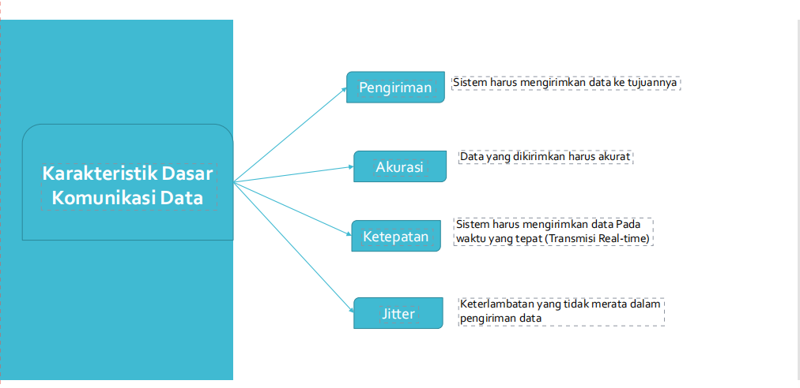
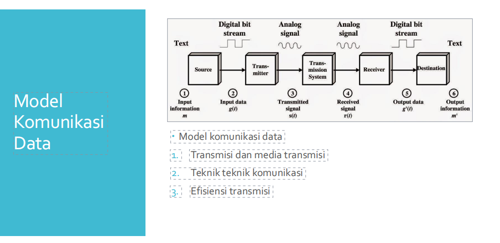
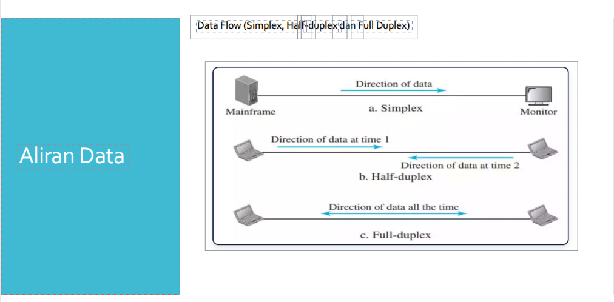

Komunikasi Data, Jaringan Data dan Internet
Mata Kuliah Komunikasi Data
Komunikasi data adalah pertukaran informasi antara dua pihak atau lebih melalui media atau saluran yang berbeda. Ini adalah konsep penting dalam teknologi informasi dan telekomunikasi yang mencakup berbagai metode, protokol, dan teknologi untuk mengirim dan menerima data, Oleh karna itu materi ini saya rangkum agar saya dan teman teman memiliki rangkuman dari materi materi yang di berikan, berikut adalah materi nya :
Sejarah Sistem Telekomunikasi
Telekomunikasi terdiri dari 2 kata yaitu "Tele" yang berarti "Jarak jauh" dan "Komunikasi" yang berarti "berita atau informasi"
Komunikasi Terus Berkembang seiring perkembangan zaman
1. Definisi Komunikasi Data
Definisi Komunikasi Data yaitu : proses pengiriman dan penerimaan data/informasi dari dua atau lebih alat yang saling terhubung

Komunikasi data juga terdiri dari 2 kata yaitu "Komunikasi" yang berarti "Berbicara atau Bertukar informasi" dan "Data" yang berarti "Hasil Informasi yang bertukar"
Lalu apa saja Komponen serta prinsip dalam Komunikasi Data? berikut adalah komponen dalam komunikasi data:


2. Jenis Jenis Komunikasi Data
Seperti yang yang di sampaikan di atas bahwa komunikasi data terus berkembang seiring berjalan nya waktu dan kemajuan teknologi, oleh karna itu kita harus bisa keep up terhadap kemajuan teknologi agar tidak tertinggal, berikut adalah jenis jenis komunikasi data dari waktu ke waktu :
 3. Model Dan Karakteristik komunikasi data
Komunikasi Data bertujuan untuk bertukar data oleh 2 atau lebih pengguna, yang artinya harus ada goals atau sistem yang akurat agar data dapat terkirim dengan baik
   
Gambar gambar di atas menunjukan bagaimana data saling bertukar, juga goals yang harus di capai sistem agar tidak ada kesalahan dalam pengiriman dan penerimaan data